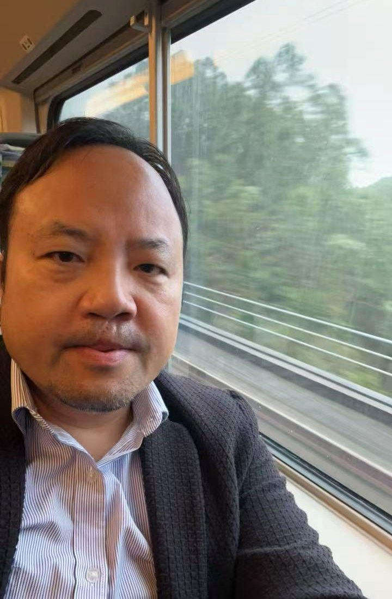
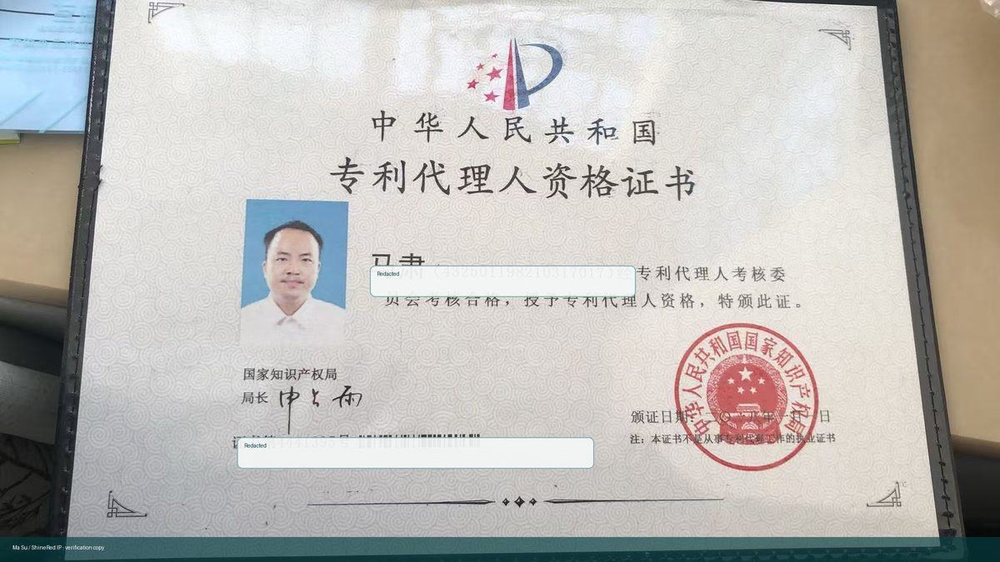
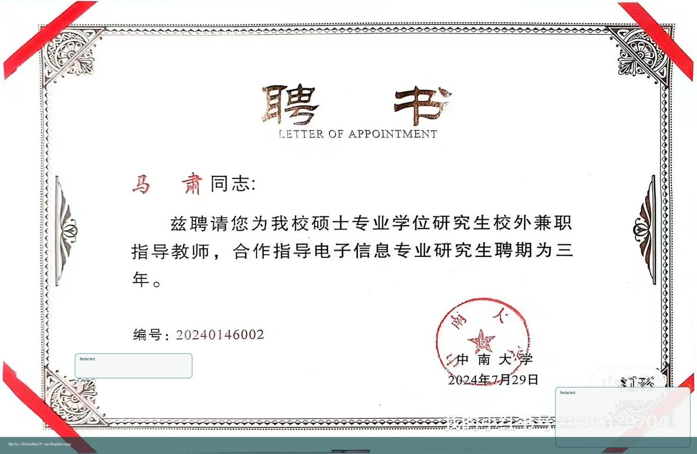
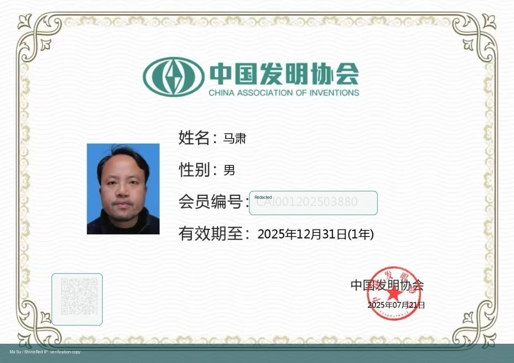
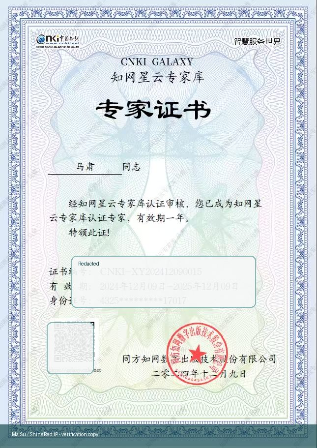

2012

About Ma Su
A person who understands invention, examination, and patent grant at the same time.
Ma Su is a former CNIPA patent examiner, inventor, patent attorney, and innovation methodology practitioner. His distinctive value is the combination of three roles: he knows how an idea becomes an invention, how an examiner judges it, and how to write it into a patent application with a stronger chance of grant.
Read the full personal storyPersonal IP Positioning
Inventor + examiner + patent attorney + innovation methodology author.
Reading to invent
From patent reading to patent creation
Through massive patent reading, he began writing his own patent applications. That early batch was successfully granted, proving that invention can be trained through method.After 2017
Two years studying how innovation happens
After leaving the patent office, he spent two years researching innovation and gradually formed a mature methodology based on technical-problem decomposition, patent information, and grant logic.Practice
Hundreds of invention patents in one year
He once supported hundreds of invention patent applications within a year, then used the method to help companies upgrade products and guide students to win science innovation awards.Former CNIPA examinerChina patent examination perspective.
Inventor and attorneyUnderstands both creation and grant procedure.
Innovation methodGuided companies and youth science innovation projects.
Textbook authorYouth science innovation guide and competition handbook builder.

Book and Curriculum
Science and Technology Innovation Practical Tutorial.
This book cover represents Ma Su's youth science innovation guide: a practical curriculum that turns observation, problem discovery, patent search, prototype testing, and IP awareness into a route students can actually follow.
The same method is also being developed into a youth innovation competition handbook, using comics and practical tasks to help students understand how science innovation works in real projects.
View full cover spread{kind=link}
Youth Innovation Case
Planning the Xiegang Yafan Cup youth science innovation competition.
Ma Su's youth innovation methodology is not only a textbook idea. It is being translated into local competition design, enterprise R&D visits, IP education, patent search training, product design guidance, roadshow practice, and commercialization pathways.
Local education
Xiegang youth innovation brand
The competition is designed for primary and secondary students in Xiegang, helping local schools build a repeatable science innovation and IP education activity.Enterprise scenario
Water-cup product innovation
Students work around functional, material, shape, smart-hardware, and prototype innovation for cups, connecting creative ideas with real manufacturing resources.IP pathway
From idea to patent to product
The model introduces patent literacy, patent search, expert review, product design, and selected commercialization so students can see how innovation creates value.Credentials and Proof
Documents behind the personal IP story.
These credentials support Ma Su's combined identity as a former examiner, patent professional, invention-method practitioner, science communication contributor, and youth innovation mentor.




